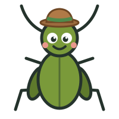

Hexa: aprende insectos
App gratuita para que niñas y niños de 5.º y 6.º de primaria conozcan los insectos y les pierdan el miedo. Sin cuentas, sin anuncios y sin recoger datos. En español e inglés.
Contenido de la Lcda. Angélica Eliana Barroso Charaf, basado en su trabajo de grado (Maestría en Enseñanza-Aprendizaje de las Ciencias Básicas, mención Biología, UNET, julio de 2023).
Novedades
- Juegos y retos: 8 juegos nuevos que se abren al avanzar: Rincón del valor, ¿Mito o verdad?, Clave del detective, Inventa tu insecto, Un día en su piel, Detective de huellas, Noche en el bosque y Red de la vida.
- Termómetro de lo que siento: los niños cuentan cómo se sienten con algunos bichos antes y después de conocerlos.
- Censo del patio: anotar los bichos que se ven, sin atraparlos, y sumar los de toda la clase.
Qué tiene Hexa
Aprender
- 8 unidades en dos partes: qué es un insecto, su vida y metamorfosis, los siete grupos, amigos o cuidado; y para expertos, insectos de Venezuela, sus primos, la red de la vida y pequeños científicos.
- Una lectura corta «Antes de empezar» en cada lección y ejercicios variados: elegir, emparejar, ordenar ciclos de vida, clasificar, poner nombres en un dibujo, «¿Quién suena?» con sonidos reales y «Toca dónde está».
- Sin castigos: lo fallado vuelve como repaso en los días siguientes. Reto del día, medallas por unidad y diplomas.
Perder el miedo
- Fotos reales solo si el niño quiere, la escalera de valentía y el botón «Me da un poco de miedo», con Paquito, el grillo, que tranquiliza.
- Rincón del valor: acercarse en 5 peldaños (de la sombra a la foto de cerca) a la araña, la cucaracha, la avispa, el alacrán y otros. El niño decide cuándo sube.
- Termómetro de lo que siento, antes y después.
Juegos y retos
- ¿Mito o verdad?: creencias como «la tijereta se mete en el oído» o «la polilla negra trae mala suerte».
- Clave del detective: identificar cualquier bicho con preguntas de sí o no, también uno de verdad en el patio.
- Inventa tu insecto (Paquito comprueba que sea un insecto de verdad), Un día en su piel (historias en las que decides tú), Detective de huellas, Noche en el bosque con linterna y Red de la vida.
Fuera de la pantalla
- Misiones de campo para mirar sin capturar, cuaderno de campo para escribir y dibujar, censo del patio y un reto corto en familia al terminar cada lección.
Mi insectario y el álbum
- Un invernadero donde se crían insectos con su metamorfosis real gracias al polen ganado; cada unidad desbloquea uno nuevo. Expediciones (juegos cortos) y decoración.
- Álbum de fichas con buscador, fotos reales y láminas de naturalistas antiguos (dominio público) con zoom.
Para docentes y familias
- Modo docente con PIN: ritmo y orden de las lecciones, fechas de apertura, nota para aprobar, modo niños bloqueado y varios perfiles por tableta.
- Progreso de cada niño, diplomas para imprimir y la clase en un archivo para pasarla a otro dispositivo.
- Pruebas de biofilia y de conocimientos (antes y después), emociones por animal y censo de la clase. Datos para investigación exportables sin nombres.
Para todos
- Lectura en voz alta, lector de pantalla, «Reducir movimiento» y música de fondo opcional. En iPhone, iPad, Android y el navegador.
Beta para iPhone y iPad
1) Instala TestFlight desde la App Store. 2) Abre testflight.apple.com/join/wGwWtfg6 en el iPhone o iPad y pulsa «Aceptar». 3) Instala Hexa desde TestFlight.
Beta para Android
1) Únete al grupo Hexa testers. 2) Abre play.google.com/apps/testing/com.zerocoolspain.hexa y pulsa «Convertirse en tester». 3) Instala Hexa desde Google Play.
En el ordenador
Hexa también funciona en el navegador de cualquier ordenador (Windows, Mac, Linux o Chromebook), sin instalar nada: abre wattboard.github.io/hexa-web/app. Si quieres tenerla como una app, en Chrome o Edge pulsa el botón «Instalar» de la barra de direcciones (en Safari del Mac: Archivo → Añadir al Dock); así funciona también sin internet. El progreso se guarda en ese navegador: en el Modo docente puedes guardar la clase en un archivo y cargarla en otro ordenador. En un Mac con chip de Apple también puedes instalar la app de iPad desde TestFlight, con el mismo enlace de la beta.
Manual
Manual para docentes, familias y niños (PDF)
Ayuda
- Modo docente: toca la inicial del niño (arriba a la derecha) → Modo docente. La primera vez pide el código de docente y que crees un PIN.
- Olvidé el PIN: en la pantalla del PIN pulsa «Olvidé el PIN» (no existe con el modo niños bloqueado: entonces solo se sale borrando la app).
- Idioma: Modo docente → Idioma, y pulsa Cerrar.
Contacto: madag.madag@gmail.com
Hexa: learn about insects
A free app that helps children in grades 5 and 6 get to know insects and lose their fear of them. No accounts, no ads, no data collected. In English and Spanish.
Content by Lcda. Angélica Eliana Barroso Charaf, based on her master's thesis (Universidad Nacional Experimental del Táchira, UNET, July 2023).
What's new
- Games and challenges: 8 new games that open as you go: Bravery corner, Myth or fact?, Detective's key, Invent your insect, A day in their shoes, Track detective, Night in the forest and Web of life.
- Feelings thermometer: children tell how they feel about some critters before and after getting to know them.
- Yard count: write down the critters you see, without catching them, and add up the whole class.
What Hexa has
Learning
- 8 units in two parts: what an insect is, their life and metamorphosis, the seven groups, friend or careful; and for experts, insects of Venezuela, their cousins, the web of life and little scientists.
- A short “Before you start” reading in every lesson and varied exercises: choose, match, order life cycles, sort, label a drawing, “Who's that sound?” with real sounds and “Tap where it is”.
- No punishments: mistakes come back as review in the following days. Daily challenge, a medal per unit and diplomas.
Losing the fear
- Real photos only if the child wants, the bravery ladder and the “It scares me a bit” button, with Paquito the cricket to reassure them.
- Bravery corner: get closer in 5 steps (from a shadow to a close-up photo) to the spider, cockroach, wasp, scorpion and others. The child decides when to move up.
- Feelings thermometer, before and after.
Games and challenges
- Myth or fact?: beliefs like “earwigs crawl into your ears” or “a black moth brings bad luck”.
- Detective's key: identify any critter with yes-or-no questions, even a real one in the yard.
- Invent your insect (Paquito checks it's a real insect), A day in their shoes (stories where you decide), Track detective, Night in the forest with a flashlight and Web of life.
Away from the screen
- Field missions to watch without catching, a field notebook to write and draw, the yard count and a short family challenge after each lesson.
My insect house and the album
- A greenhouse where you raise insects through their real metamorphosis with the pollen you earn; each unit unlocks a new one. Expeditions (short games) and decorations.
- An album of cards with search, real photos and old naturalists' plates (public domain) with zoom.
For teachers and families
- Teacher mode with a PIN: lesson pace and order, opening dates, passing grade, locked kids mode and several profiles per tablet.
- Each child's progress, printable diplomas and the class in a file to move it to another device.
- Biophilia and knowledge tests (before and after), feelings per animal and the class count. Research data exportable without names.
For everyone
- Read-aloud, screen reader, “Reduce motion” and optional background music. On iPhone, iPad, Android and the browser.
iPhone and iPad beta
1) Install TestFlight from the App Store. 2) Open testflight.apple.com/join/wGwWtfg6 on the iPhone or iPad and tap “Accept”. 3) Install Hexa from TestFlight.
Android beta
1) Join the Hexa testers group. 2) Open play.google.com/apps/testing/com.zerocoolspain.hexa and tap “Become a tester”. 3) Install Hexa from Google Play.
On a computer
Hexa also works in the browser on any computer (Windows, Mac, Linux or Chromebook), with nothing to install: open wattboard.github.io/hexa-web/app. To keep it as an app, in Chrome or Edge press the “Install” button in the address bar (in Safari on a Mac: File → Add to Dock); then it also works offline. Progress is saved in that browser: in Teacher mode you can save the class to a file and load it on another computer. On a Mac with Apple silicon you can also install the iPad app from TestFlight, with the same beta link.
Guide
Guide for teachers, families and kids (PDF)
Help
- Teacher mode: tap the child's initial (top right) → Teacher mode. The first time it asks for the teacher code and for you to create a PIN.
- Forgot the PIN: on the PIN screen tap “I forgot the PIN” (not available while kids mode is locked: then the only way out is deleting the app).
- Language: Teacher mode → Language, then press Close.
Contact: madag.madag@gmail.com